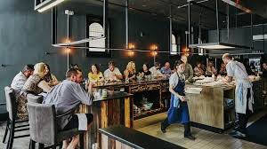

Our Menu
Asida with Mullah
Traditional South Sudanese porridge served with a rich green vegetable stew.

Kisra with Okra Stew
Thin fermented bread paired with slow-cooked okra in spiced sauce.
Nyama Choma (Grilled Meat)

Charcoal-grilled beef or goat, served with kachumbari and ugali.